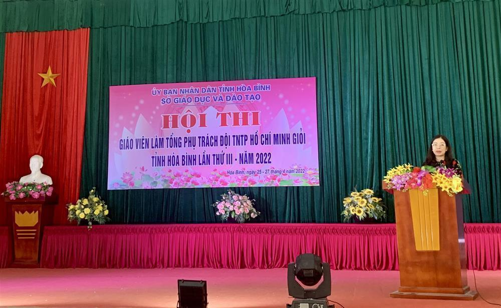
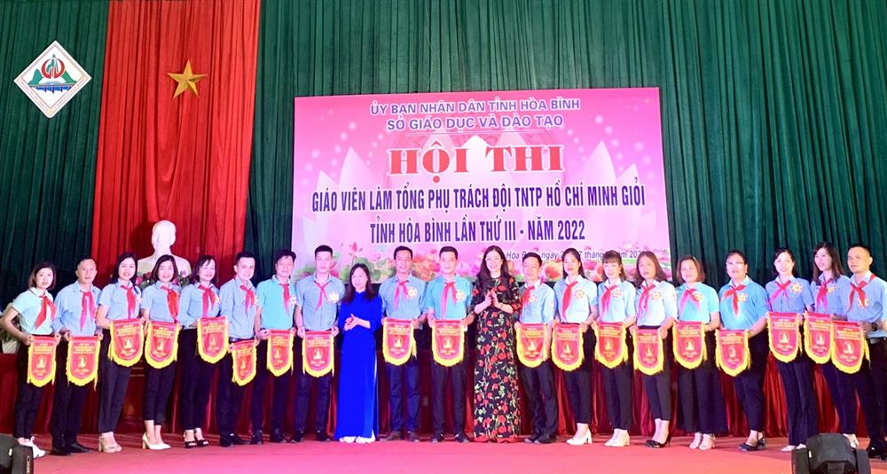

Trang chủ
Giới thiệu
Dạy và học
Tin tức
Văn bản
Album
Video
Tin tức về sở gd-dt
Hòa Bình: công nhận 31 giáo viên làm tổng phụ trách Đội giỏi năm 2022
HOẠT ĐỘNG DẠY VÀ HỌC
Trong 03 ngày, từ ngày 25-27/4/2022, tại trường Tiểu học Sông Đà thành phố Hòa Bình, Sở GD&ĐT tổ chức khai mạc hội thi Giáo viên làm tổng phụ trách (TPT) Đội thiếu niên tiền phong Hồ Chí Minh giỏi tỉnh lần thứ III năm 2022. Dự và chỉ đạo Hội thi có Nhà giáo Bùi Thị Kim Tuyến – TUV, Giám đốc Sở Giáo dục và Đào tạo; Nhà giáo Nguyễn Đức Lương – Phó Giám đốc Sở GD&ĐT, Trưởng ban Tổ chức Hội thi.

Nhà giáo Bùi Thị Kim Tuyến - TUV, Giám đốc Sở GD&ĐT phát biểu chỉ đạo Hội thi
Hội thi nhằm tuyển chọn, công nhận, tuyên dương các giáo viên có năng lực làm TPT Đội, tạo môi trường cho các giáo viên trao đổi kinh nghiệm về công tác Đội, khuyến khích giáo viên rèn luyện để tham gia thực hiện hiệu quả phong trào thiếu nhi trong trường học. Hội thi cũng là một trong những căn cứ đánh giá thực trạng đội ngũ giáo viên làm TPT Đội, từ đó, xây dựng kế hoạch đào tạo, bồi dưỡng nâng cao trình độ cho giáo viên làm TPT Đội, đáp ứng yêu cầu đổi mới công tác Đội và phong trào thiếu nhi trong nhà trường. Qua hội thi, các cơ sở giáo dục và tổ chức Đội sẽ phát hiện và nhân rộng những điển hình tiên tiến, góp phần nâng cao chất lượng giáo dục toàn diện cho học sinh, đảm bảo chất lượng công tác Đội và phong trào thiếu nhi trên toàn tỉnh.

Các đồng chí Bùi Thị Kim Tuyến - TUV, Giám đốc Sở GD&ĐT; Nguyễn Thị Ngọc Lan, Phó Chủ tịch Hội đồng Đội tỉnh, Phó Trưởng ban Thanh Thiếu nhi trường học
Tỉnh đoàn Hòa Bình tặng Cờ lưu niệm cho các thí sinh tham dự Hội thi
Hội thi thu hút sự tham gia của 31 thí sinh là giáo viên TPT Đội tiêu biểu được các đơn vị lựa chọn từ hội thi cấp huyện, thành phố. Tại hội thi các thí sinh tham gia tranh tài qua 4 phần thi gồm: Báo cáo sáng kiến kinh nghiệm, kiến thức, năng khiếu, kỹ năng thực hành nghiệp vụ công tác Đội. Qua các phần thi, các thí sinh đã thể hiện được năng lực, bản lĩnh, kinh nghiệm, tâm huyết đối với công tác Đội và phong trào thiếu nhi trong nhà trường. Đặc biệt, nhiều thí sinh có hiểu biết sâu rộng về tổ chức Đội, nắm chắc các phong trào thi đua của Đội gắn với định hướng đổi mới giáo dục, nắm vững trình tự và biết cách tổ chức các hoạt động ngoại khóa cho Liên đội đảm bảo khoa học, phong phú, hiệu quả, phù hợp với tâm lý học sinh... Phát biểu chỉ đạo tại Hội thi, đồng chí Bùi Thị Kim Tuyến – TUV, Giám đốc Sở GD&ĐT ghi nhận và biểu dương những nỗ lực, cố gắng và thành tích xuất sắc mà các đồng chí giáo viên làm Tổng phụ trách Đội đã đạt được trong thời gian qua. Đồng chí cũng hy vọng sau hội thi các đồng chí giáo viên làm Tổng phụ trách Đội sẽ giữ mãi ngọn lửa nhiệt tình, lòng yêu trẻ, phấn đấu nhiều hơn nữa để từ những đốm lửa nhiệt huyết hôm nay sẽ không ngừng lan tỏa và cháy bùng lên phong trào Đội TNTP Hồ Chí Minh nhiệt tình, năng động, sáng tạo, hiệu quả góp phần nâng cao chất lượng, hiệu quả công tác giáo dục toàn diện tại các nhà trường. Kết thúc hội thi, Ban tổ chức đã công nhận 31/31 giáo viên TPT Đội TNTP Hồ Chí Minh giỏi tỉnh Hòa Bình lần thứ III năm 2022, trong đó có 09 giải Khuyến khích, 08 giải Ba, 06 giải Nhì và 04 giải Nhất gồm các thí sinh Nguyễn Diệu Linh trường Tiểu học Trần Quốc Toản thành phố Hòa Bình; Kim Mạnh Thành trường TH&THCS Tân Thành phòng GD&ĐT huyện Lương Sơn; Xa Việt Hùng trường PT DTNT THCS Đồng Chum phòng GD&ĐT huyện Đà Bắc; Nguyễn Văn Triệu trường TH&THCS Khoan Dụ phòng GD&ĐT huyện Lạc Thủy. /.